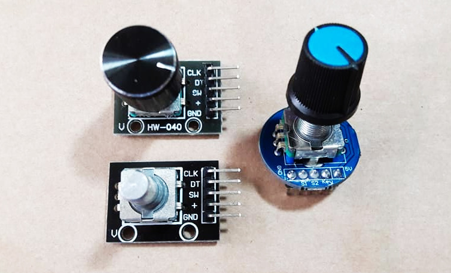
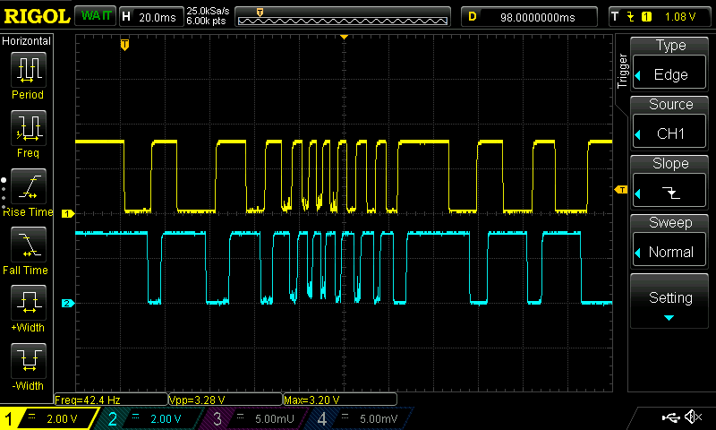
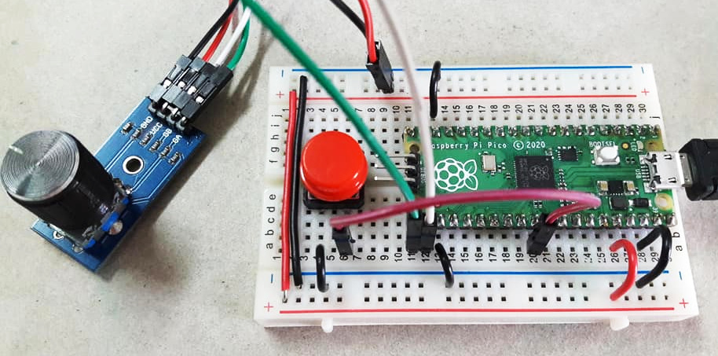
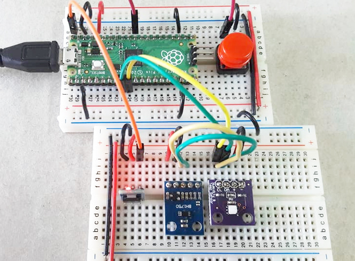
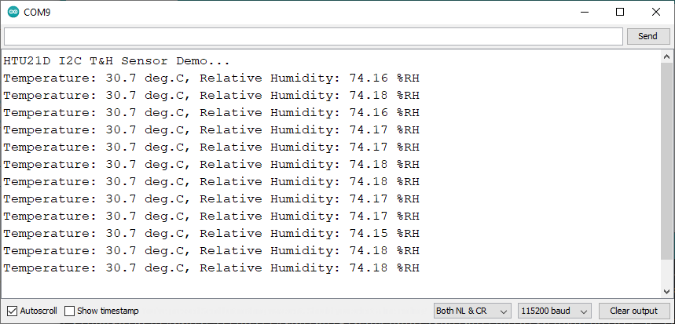
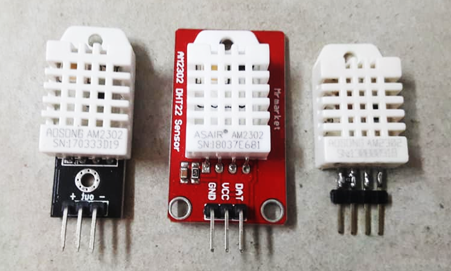
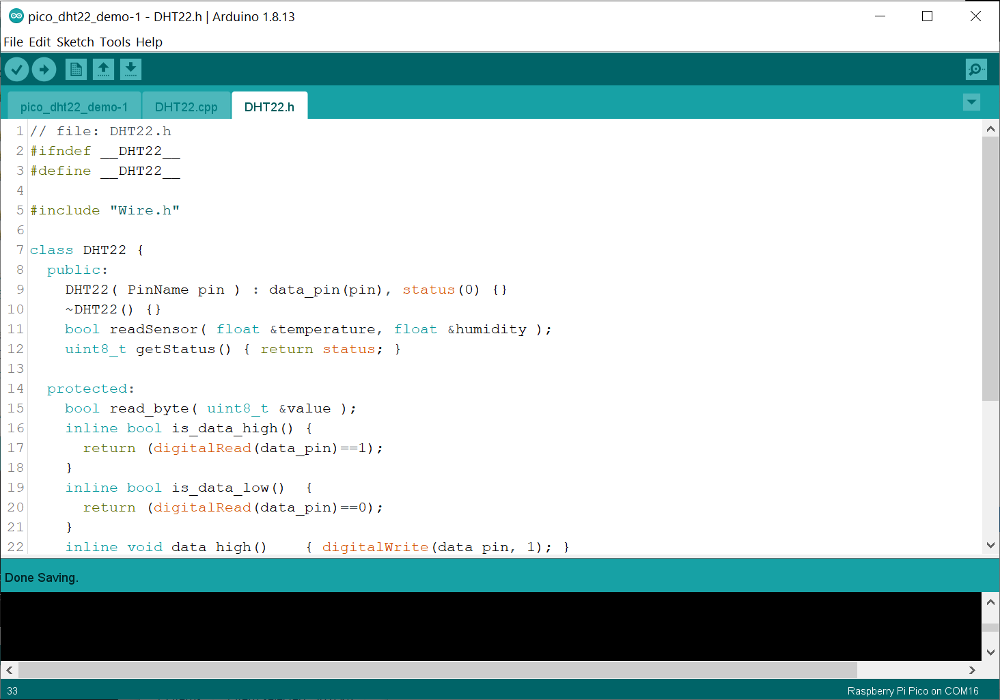
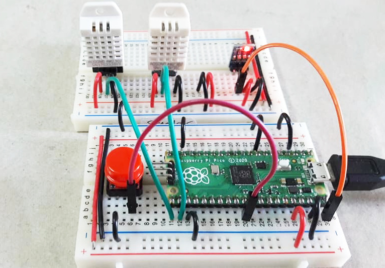
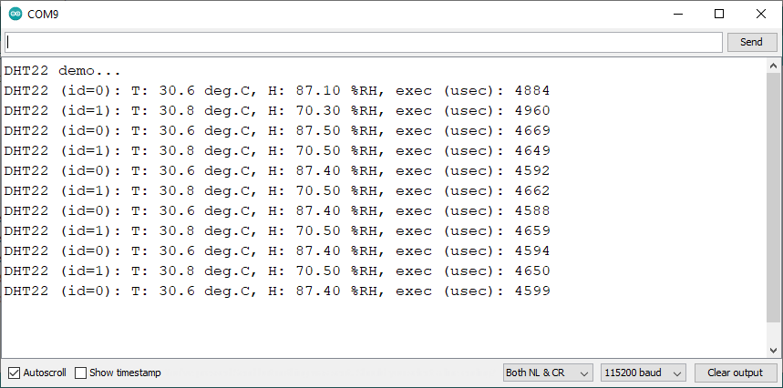
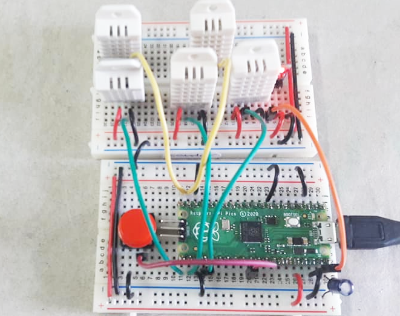

ARM Mbed OS for Raspberry Pi Pico RP2040: Code Examples (Part 3)#
เนื้อหาในส่วนนี้สาธิตการเขียนโค้ดโดยใช้ Mbed OS และ Arduino IDE สำหรับบอร์ดไมโครคอนโทรลเลอร์ที่ใช้ชิป RP2040 เช่น Raspberry Pi Pico โดยนำเสนอเป็น ตอนที่ 3 ต่อจาก ตอนที่ 1 | ตอนที่ 2
Keywords: Mbed OS, Raspberry Pi Pico, RP2040, Mbed-enabled Platforms, RTOS Programming
▷ การสื่อสารระหว่าง ISR กับเธรดโดยใช้ Semaphore#
โดยทั่วไป RTOS รองรับการสื่อสารระหว่างฟังก์ชันที่ทำหน้าที่เป็น ISR (Interrupt Service Routine หรือเรียกว่า Interrupt Handler) กับเธรดหลักในระบบ ซึ่งก็มีหลายวิธีให้เลือกได้
ตัวอย่างนี้ สาธิตการใช้งานสิ่งที่เรียกว่า "เซมาฟอร์" (Semaphore)
โดยกำหนดให้มีค่า 0 หรือ 1 เท่านั้น (เป็นแบบไบนารี)
และใช้คลาส Semaphore
ของ Mbed OS
เซมาฟอร์สามารถใช้ได้กับการทำงานของ ISR ในกรณีที่ต้องการเพิ่มค่าของเซมาฟอร์ (Semaphore Release) และจะไม่มีการหยุดการทำงานของ ISR (ไม่ถูกบล็อการทำงานและอยู่ในสถานะรอ)
ในทางตรงข้าม ถ้าเธรดต้องการจะใช้หรือลดค่าของเซมาฟอร์ (Semaphore Acquire) แต่มีจำนวนเป็น 0 (ต่ำสุดแล้ว) จะถูกเปลี่ยนสถานะให้เป็นการรอ (Waiting) จนกว่าจะใช้งานเซมาฟอร์ได้ (มีค่ามากกว่า 0)
#include "mbed.h"
using namespace mbed;
using namespace rtos;
#define LED_PIN (p25) // GP25 pin (on-board LED)
#define BUTTON_PIN (p16) // GP16 pin
#define MIN_PULSEWIDTH_MS (20)
DigitalOut led( LED_PIN );
InterruptIn button( BUTTON_PIN, PullUp );
// create a binary semaphore
Semaphore sem(0,1); // count=0, maxcount=1
volatile uint32_t rise_time = 0, fall_time = 0;
uint64_t next_timeout;
void isr_button() { // ISR function
uint32_t now = Kernel::get_ms_count();
if ( button.read() ) { // high
rise_time = now;
if ( rise_time - fall_time > MIN_PULSEWIDTH_MS ) {
sem.release(); // release the semaphore
}
} else { // low
fall_time = now;
}
}
void setup() {
SerialUSB.begin( 115200 );
while(!SerialUSB){} // wait until the Serial port is open.
button.rise( isr_button );
button.fall( isr_button );
next_timeout = Kernel::get_ms_count();
}
std::string sbuf;
uint32_t event_cnt = 0;
void loop() {
// wait until the semaphore becomes avaiable (with timeout)
if ( sem.try_acquire_until(next_timeout) ) {
led = !led; // toggle the LED
event_cnt += 1; // increment the event counter
sbuf = "event count: ";
sbuf += std::to_string( event_cnt );
SerialUSB.println( sbuf.c_str() );
}
next_timeout = Kernel::get_ms_count() + 100; // update timeout
}
▷ การตรวจสอบการเปลี่ยนตำแหน่งของโมดูล Rotary Encoder#
โมดูล Rotary Encoder เป็นอุปกรณ์ที่สร้างสัญญาณดิจิทัลแบบพัลส์ (Pulses) และมี 2 ช่อง (A และ B) โดยปรกติสัญญาณทั้งสองจะมีสถานะลอจิกเป็น High แต่เมื่อใช้มือหมุนในทิศทางทวนหรือตามเข็มนาฬิกา จะเกิดการเปลี่ยนแปลงลอจิกที่ช่องสัญญาณ A และ B ในลักษณะพัลส์ แต่การเปลี่ยนแปลงของแต่ละช่องจะเกิดขึ้นไม่พร้อมกัน จำนวนพัลส์ที่เกิดขึ้นจะขึ้นอยู่กับตำแหน่งเชิงมุมที่เปลี่ยนไป อุปกรณ์ประเภทนี้สามารถนำมาใช้สร้างสัญญาณอินพุตให้ไมโครคอนโทรลเลอร์

รูป: ตัวอย่างโมดูล Rotary Encoder

รูป: ตัวอย่างรูปคลื่นสัญญาณ A และ B จากโมดูล Rotary Encoder เมื่อมีการหมุนเกิดขึ้น
โค้ดตัวอย่างต่อไปนี้ สาธิตการตรวจสอบการเกิดสัญญาณพัลส์ที่ช่องสัญญาณ A และ B และระบุทิศทางการหมุน
ซึ่งจะทำให้ค่าของตัวนับ encoder_count เพิ่มขึ้นหรือลดลงตามทิศทางการหมุน
หลักการทำงานคือ การตรวจสอบการเปลี่ยนแปลงโดยใช้อินเทอร์รัพท์ภายนอก ทั้งขอบขาขึ้นและขอบขาลง
และใช้คำสั่ง attachInterrupt(...) ของ Arduino API
เมื่อเกิดอินเทอร์รัพท์ที่ช่องสัญญาณ A ในแต่ละครั้ง ฟังก์ชันที่ทำหน้าที่เป็น ISR (Interrupt Service Routine) สำหรับอินเทอร์รัพท์ดังกล่าว จะทำงานและตรวจสอบดูว่า มีสัญญาณพัลส์แบบ Low ที่ช่อง A เกิดขึ้น และมีความกว้างไม่ต่ำกว่าค่าที่กำหนดไว้หรือไม่ (เช่น 20 มิลลิวินาที)
ถ้าเงื่อนไขดังกล่าวเป็นจริง ให้ถือว่ามีการเปลี่ยนตำแหน่งไปหนึ่งตำแหน่ง สถานะของสัญญาณช่อง B ในขณะนั้น จะถูกใช้ในการระบุทิศทางการเปลี่ยนแปลงที่เกิดขึ้น (เพิ่มขึ้นหรือลดลงทีละ 1)
#define PIN_A (16)
#define PIN_B (17)
#define MIN_PULSE_MS (20)
volatile int32_t encoder_count = 0;
volatile uint32_t last_time = 0;
void isr_pin_a() { // ISR function
uint32_t now = millis();
int a = digitalRead( PIN_A );
int b = digitalRead( PIN_B );
if ( now - last_time >= MIN_PULSE_MS ) {
if (a==0) {
encoder_count += b ? -1 : 1;
}
}
last_time = now;
}
void setup() {
SerialUSB.begin(115200);
while(!SerialUSB){}
attachInterrupt( PIN_A, isr_pin_a, CHANGE );
pinMode( PIN_A, INPUT_PULLUP );
pinMode( PIN_B, INPUT_PULLUP );
}
int saved_count = 0;
void loop() {
if ( saved_count != encoder_count ) {
saved_count = encoder_count;
SerialUSB.println( saved_count );
}
delay(5);
}
ถ้าจะเปลี่ยนมาใช้คลาสของ Mbed Drivers เช่น InterruptIn และ DigitalIn
สำหรับขาสัญญาณอินพุต A และ B และใช้คำสั่งของ Mbed OS (RTOS) ก็มีตัวอย่างดังนี้
เช่น การใช้คำสั่ง Kernel::get_ms_count(...) แทนที่คำสั่ง millis(...)
สำหรับการอ่านค่าตัวเลขเวลาของระบบในขณะนั้น (หน่วยเป็นมิลลิวินาที)
#include "mbed.h"
using namespace mbed;
using namespace rtos;
#define PIN_A (p16)
#define PIN_B (p17)
#define MIN_PULSE_MS (20)
InterruptIn pin_a( PIN_A );
DigitalIn pin_b( PIN_B, PullUp );
// create a binary semmaphore
Semaphore sem(0,1); // count=0, maxcount=1
volatile int32_t encoder_count = 0;
volatile uint32_t last_time = 0;
void isr_pin_a() {
uint32_t now = Kernel::get_ms_count();
int a = pin_a.read();
int b = pin_b.read();
if ( now - last_time >= MIN_PULSE_MS ) {
if (a==0) {
encoder_count += b ? -1 : 1;
sem.release(); // release the semaphore
}
}
last_time = now;
}
void setup() {
SerialUSB.begin( 115200 );
while(!SerialUSB){}
pin_a.rise( isr_pin_a );
pin_a.fall( isr_pin_a );
}
int saved_count = 0;
void loop() {
// wait until the semaphore becomes available
sem.acquire();
saved_count = encoder_count;
SerialUSB.println( saved_count );
}
จากโค้ดตัวอย่าง จะเห็นได้ว่า มีการใช้เซมาฟอร์แบบไบนารี (Binary Semaphore)
สำหรับการสื่อสารกันระหว่างฟังก์ชันสำหรับ ISR และการทำงานของเธรดหลักที่ทำคำสั่งต่าง ๆ
ในฟังก์ชัน main() {...}
นอกจากการใช้เซมาฟอร์แล้ว เรายังสามารถใช้คลาส Queue ของ Mbed OS
แทนได้สำหรับการส่งข้อมูลจาก ISR ไปยังเธรดหลัก ตามตัวอย่างต่อไปนี้ ใ
นตัวอย่างนี้ได้เลือกใช้ชนิดข้อมูลเป็นเลขจำนวนเต็ม (int) สำหรับนำไปใช้กับ Queue
และอ้างอิงข้อมูลโดยใช้พอยน์เตอร์
ในตัวอย่างนี้ ISR จะนำข้อมูลไปใส่ลงใน Queue ถ้ายังไม่เต็มความจุ
และเป็นตามเงื่อนไขที่กำหนด
(เมื่อมีการตรวจสอบพบว่า มีการเปลี่ยนตำแหน่งของโมดูล Rotary Encoder)
และเธรดหลักจะคอยอ่านข้อมูลจาก Queue
#include "mbed.h"
using namespace mbed;
using namespace rtos;
#define PIN_A (p16)
#define PIN_B (p17)
#define MIN_PULSE_MS (20)
#define QUEUE_CAPACITY (4)
InterruptIn pin_a( PIN_A );
DigitalIn pin_b( PIN_B, PullUp );
Queue<int, QUEUE_CAPACITY> queue;
volatile int encoder_count = 0;
volatile uint32_t last_time = 0;
void isr_pin_a() {
uint32_t now = Kernel::get_ms_count();
int a = pin_a.read();
int b = pin_b.read();
if ( now - last_time >= MIN_PULSE_MS ) {
if (a==0) {
encoder_count += b ? -1 : 1;
// send data to the queue
queue.try_put( (int *)&encoder_count );
}
}
last_time = now;
}
void setup() {
SerialUSB.begin( 115200 );
while(!SerialUSB){}
// enable interrupt for pin A (both rising and falling edges)
pin_a.rise( isr_pin_a );
pin_a.fall( isr_pin_a );
}
void loop() {
int *data_ptr;
while ( queue.count() > 0 ) { // if queue is not empty
// get data from the queue
if ( queue.try_get( &data_ptr ) ) {
SerialUSB.println( *data_ptr );
}
}
}

รูป: ตัวอย่างการต่อวงจรทดลองบนเบรดบอร์ดสำหรับการใช้งานโมดูล Rotary Encoder
▷ การอ่านค่าจากโมดูลเซ็นเซอร์ HTU21D#
โมดูล [HTU21D] (Datasheet)
มีไอซีเซ็นเซอร์ของบริษัท TE Connectivity สำหรับวัดอุณหภูมิและความชื้นสัมพัทธ์ในอากาศ
ให้ข้อมูลแบบดิจิทัลและสื่อสารข้อมูลด้วยบัส I2C (แอดเดรส 0x40)
ข้อมูลเชิงเทคนิคสำหรับ HTU21D
- Relative humidity measurement: from 0% to 100%
- Humidity Accuracy: ± 2% RH (20%RH to 80%RH)
- Humidity Resolution: 12 bits (max.)
- Temperature measurement: from -40°C to 125°C
- Temperature Accuracy: ± 0.3°C @25 deg.C
- Temperature Resolution: 14 bits (max.)
ตัวอย่างนี้สาธิตการเขียนโค้ดโดยใช้ Arduino API สำหรับบอร์ด Pico เพื่อให้อุปกรณ์ทำหน้าที่เป็น I2C Master เชื่อมต่อสื่อสารกับโมดูล HTU21D ที่ทำหน้าที่เป็น I2C Slave เลือกใช้ความเร็วของบัส (I2C Bus Speed) เท่ากับ 400kHz
#include "Wire.h"
#define SDA_PIN (p6)
#define SCL_PIN (p7)
#define I2C_ADDR (0x40) // HTU21D device address
#define TRIG_TEMP_MEASURE_NOHOLD (0xF3)
#define TRIG_HUMD_MEASURE_NOHOLD (0xF5)
// Note The MbedI2C class is derived from Arduino's HardwareI2C.
arduino::MbedI2C i2c( SDA_PIN, SCL_PIN ); // the same as Wire
void write_u8( uint8_t addr, uint8_t data ) {
i2c.beginTransmission(addr);
i2c.write(data);
i2c.endTransmission();
}
bool read_bytes( uint8_t addr, uint8_t *buf, uint8_t len ) {
i2c.requestFrom( addr, len );
if ( i2c.available() == len ) {
for ( uint8_t i=0; i < len; i++ ) {
buf[i] = i2c.read();
}
return true;
}
return false;
}
uint8_t check_crc( uint16_t value, uint8_t chsum ) {
const uint32_t SHIFTED_DIVISOR = 0x988000;
uint32_t remainder = (uint32_t)value << 8;
remainder |= chsum;
uint32_t divisor = (uint32_t)SHIFTED_DIVISOR;
for (int i=0 ; i < 16 ; i++) {
if ( remainder & (uint32_t)1<<(23-i) ) {
remainder ^= divisor;
}
divisor >>= 1;
}
return (uint8_t)remainder;
}
bool read_humidity( uint8_t addr, float& humidity ) {
// start the measurement for humidity (with no bus holding)
write_u8( addr, TRIG_HUMD_MEASURE_NOHOLD );
delay( 30 );
uint8_t buf[3];
if ( read_bytes(addr, buf, 3) ) {
uint16_t value = ((uint16_t)buf[0] << 8) | buf[1];
if (check_crc(value,buf[2]) != 0) { // crc error
return false;
}
value &= 0xfffc;
humidity = (0.00190735*value) - 6;
return true;
}
return false;
}
bool read_temperature( uint8_t addr, float& temperature ) {
// start the measurement for temperature (with no bus holding)
write_u8( addr, TRIG_TEMP_MEASURE_NOHOLD );
delay( 85 );
uint8_t buf[3];
if ( read_bytes(addr, buf, 3) ) {
uint16_t value = ((uint16_t)buf[0] << 8) | buf[1];
if (check_crc(value,buf[2]) != 0) { // crc error
return false;
}
value &= 0xfffc;
temperature = (0.00268127*value) - 46.85;
return true;
}
return false;
}
void setup() {
SerialUSB.begin( 115200 );
while(!SerialUSB){} // wait until the Serial port is open.
Serial.println( "HTU21D I2C T&H Sensor Demo..." );
// start the I2C master
i2c.begin();
// set the I2C clock frequency
i2c.setClock( 400000 );
}
char sbuf[32];
String strbuf;
void loop() {
float temp, humid;
strbuf = "Temperature: ";
if ( read_temperature(I2C_ADDR, temp) ) {
sprintf( sbuf, "%.1f", temp );
} else {
sprintf( sbuf, "--.-" );
}
strbuf += sbuf;
strbuf += " deg.C, Relative Humidity: ";
if ( read_humidity(I2C_ADDR, humid) ) {
sprintf( sbuf, "%.2f", humid );
} else {
sprintf( sbuf, "--.--" );
}
strbuf += sbuf;
strbuf += " %RH";
SerialUSB.println( strbuf.c_str() );
delay(1000);
}
ถ้าจะเปลี่ยนมาลองใช้คำสั่งของ Mbed Drivers สำหรับ I2C Master ก็มีตัวอย่างโค้ดดังนี้
#include "mbed.h"
#include "I2C.h"
using namespace mbed;
using namespace rtos;
using namespace std::chrono;
#define SDA_PIN (p6)
#define SCL_PIN (p7)
#define I2C_ADDR (0x40)
#define TRIG_TEMP_MEASURE_NOHOLD (0xF3)
#define TRIG_HUMD_MEASURE_NOHOLD (0xF5)
I2C i2c_bus( SDA_PIN, SCL_PIN ); // sda and scl pins
const uint8_t addr8bit = I2C_ADDR << 1;
void write_u8( uint8_t addr, uint8_t data ) {
i2c_bus.write( addr, (const char*)&data, 1 );
}
bool read_bytes( uint8_t addr, uint8_t *buf, uint8_t len ) {
if ( i2c_bus.read( addr, (char*)buf, 3 ) != 0 ) {
return false;
}
return true;
}
uint8_t check_crc( uint16_t value, uint8_t chsum ) {
const uint32_t SHIFTED_DIVISOR = 0x988000;
uint32_t remainder = (uint32_t)value << 8;
remainder |= chsum;
uint32_t divisor = (uint32_t)SHIFTED_DIVISOR;
for (int i=0 ; i < 16 ; i++) {
if ( remainder & (uint32_t)1<<(23-i) ) {
remainder ^= divisor;
}
divisor >>= 1;
}
return (uint8_t)remainder;
}
bool read_humidity( uint8_t addr, float& humidity ) {
// start the measurement for humidity (with no bus holding)
write_u8( addr, TRIG_HUMD_MEASURE_NOHOLD );
ThisThread::sleep_for( 30ms );
uint8_t buf[3];
if ( read_bytes(addr, buf, 3) ) {
uint16_t value = ((uint16_t)buf[0] << 8) | buf[1];
if (check_crc(value,buf[2]) != 0) { // crc error
return false;
}
value &= 0xfffc;
humidity = (0.00190735*value) - 6;
return true;
}
return false;
}
bool read_temperature( uint8_t addr, float& temperature ) {
// start the measurement for temperature (with no bus holding)
write_u8( addr, TRIG_TEMP_MEASURE_NOHOLD );
ThisThread::sleep_for( 85ms );
uint8_t buf[3];
if ( read_bytes(addr, buf, 3) ) {
uint16_t value = ((uint16_t)buf[0] << 8) | buf[1];
if (check_crc(value,buf[2]) != 0) { // crc error
return false;
}
value &= 0xfffc;
temperature = (0.00268127*value) - 46.85;
return true;
}
return false;
}
void setup() {
SerialUSB.begin( 115200 );
while(!SerialUSB){} // wait until the Serial port is open.
Serial.println( "HTU21D I2C T&H Sensor Demo..." );
// set the I2C clock frequency
i2c_bus.frequency(400000);
}
char sbuf[32];
std::string strbuf;
void loop() {
float temp, humid;
strbuf = "Temperature: ";
if ( read_temperature( addr8bit, temp ) ) {
sprintf( sbuf, "%.1f", temp );
} else {
sprintf( sbuf, "--.-" );
}
strbuf += sbuf;
strbuf += " deg.C, Relative Humidity: ";
if ( read_humidity( addr8bit, humid ) ) {
sprintf( sbuf, "%.2f", humid );
} else {
sprintf( sbuf, "--.--" );
}
strbuf += sbuf;
strbuf += " %RH";
SerialUSB.println( strbuf.c_str() );
ThisThread::sleep_for( 1000ms );
}

รูป: ตัวอย่างการต่อวงจรทดลองสำหรับโมดูล HTU21D และมีโมดูล BH1750 ใช้งานร่วมกัน

รูป: ตัวอย่างข้อความเอาต์พุตที่ได้รับและแสดงค่าของโมดูลเซ็นเซอร์ HTU21D
▷ การอ่านค่าจากโมดูลเซ็นเซอร์ DHT22#
โมดูล AM2302 / DHT22 เป็นตัวอย่างของเซ็นเซอร์สำหรับนำมาใช้เพื่อวัดค่าอุณหภูมิ (Temperature)
และความชื้นสัมพัทธ์ในอากาศ (Relative Humidity: RH)
ใช้ขาสัญญาณดิจิทัลแบบสองทิศทางเพียงเส้นเดียวในการสื่อสารข้อมูลกับไมโครคอนโทรลเลอร์
ขา DATA จะต้องมีตัวต้านทานแบบ Pull-up ต่ออยู่ด้วย (เช่น 4.7kΩ)
และสามารถใช้แรงดันไฟเลี้ยง VCC = +3.3V ได้

รูป: ตัวอย่างโมดูล DHT22 Breakout Boards
ข้อมูลบิตที่ได้จากโมดูลนี้ในการอ่านค่าแต่ละครั้งจะมีจำนวน 40 บิต หรือ 5 ไบต์ แบ่งเป็น
- 16-bit Relative Humidity
- 16-bit Temperature
- 8-bit Checksum
จากลำดับข้อมูลบิตที่ได้รับจากโมดูล DHT22 ถ้าจะจำแนกว่า บิตใดเป็น 0 หรือ 1 จะต้องตรวจสอบจากความกว้างของสัญญาณพัลส์ที่ถูกส่งออกมาตามลำดับ (ศึกษาเพิ่มเติมได้จากเอกสาร Datasheet)
ลองมาดูตัวอย่างเขียนโค้ด โดยสร้างคลาส (C++ Class)
และมีตัวอย่างการใช้งานดังนี้ โดยใช้กับโมดูล DHT22 จำนวน 2 ชุด
นำขาสัญญาณ DATA มาต่อเข้าที่ขา p16 และ p17 ของบอร์ด Pico ตามลำดับ
// file: DHT22.h
#ifndef __DHT22__
#define __DHT22__
#include "Wire.h"
class DHT22 {
public:
DHT22( PinName pin ) : data_pin(pin), status(0) {}
~DHT22() {}
bool readSensor( float &temperature, float &humidity );
uint8_t getStatus() { return status; }
protected:
bool read_byte( uint8_t &value );
inline bool is_data_high() {
return (digitalRead(data_pin)==1);
}
inline bool is_data_low() {
return (digitalRead(data_pin)==0);
}
inline void data_high() { digitalWrite(data_pin, 1); }
inline void data_low() { digitalWrite(data_pin, 0); }
inline void data_input() { pinMode(data_pin, INPUT); }
inline void data_output() { pinMode(data_pin, OUTPUT); }
private:
PinName data_pin;
uint8_t status;
};
#endif
// fille: DHT22.cpp
#include "DHT22.h"
bool DHT22::read_byte( uint8_t &value ) {
uint8_t cnt, result = 0x00;
for( int i=0; i < 8; i++ ) {
cnt = 0;
while( is_data_low() ) { // wait until DATA goes HIGH.
delayMicroseconds(2);
if ( ++cnt > 100 ) { // timeout
status |= 0x01; // error: DATA is stuck LOW.
return false;
}
}
delayMicroseconds(30); // wait for 30 usec
result <<= 1;
if ( is_data_high() ) { // if DATA is HIGH, this bit is 1.
result |= 1;
}
cnt = 0;
while( is_data_high() ) { // wait until DATA goes LOW.
delayMicroseconds(2);
if ( ++cnt > 100 ) { // timeout
status |= 0x02; // error: DATA is stuck HIGH.
return false;
}
}
}
value = result; // one data byte
status = 0; // status: ok
return true;
}
bool DHT22::readSensor( float &temperature, float &humidity ) {
uint8_t buf[5];
status = 0;
// DATA must be configured as output.
data_output();
// send a start signal
data_low();
delayMicroseconds(500); // at least 500 msec
data_high();
// release the DATA pin and wait for a response signal
data_input();
delayMicroseconds(30);
if ( is_data_high() ) { // LOW expected
status |= 0x02; // error: DATA is stuck HIGH.
}
delayMicroseconds(80);
if ( is_data_low() ){ // HIGH expected
status |= 0x01; // error: DATA is stuck lOW.
}
delayMicroseconds(80);
if ( status != 0 ) { // if an error has occurred
data_output();
data_high();
return false;
}
status = 0;
// Now the DATA line must be LOW.
uint8_t value, checksum = 0x00;
for ( int i=0; i < 5; i++ ) { // read 5 bytes into the buffer
if ( !read_byte( value ) ) { // error
status |= 0x04;
break;
}
buf[i] = value;
if ( i < 4 ) {
checksum += value;
}
}
data_output();
data_high();
data_input();
if ( buf[4] != checksum ) {
status |= 0x08; // checksum error
return false;
}
// temperature in Celsius (0.1 step)
uint16_t temp = (buf[2] << 8) + buf[3];
if (temp & 0x8000) { // The sign bit is 1.
temp &= 0x7fff;
temp = -temp;
}
temperature = 0.1 * temp;
// rel. humidity in percent (0.1 step)
uint16_t humid = (buf[0] << 8) + buf[1];
humidity = 0.1 * humid;
return (status==0);
}
โค้ดสาธิตการใช้งานคลาส DHT22
// TEST CODE: Single-Thread Version
#include "DHT22.h"
const int NUM_SENSORS = 2;
// create two DHT22 instances
DHT22 *sensors[] = { new DHT22( p16 ), new DHT22( p17 ) };
char sbuf[64]; // used when calling sprintf()
String strbuf;
void setup() {
SerialUSB.begin(115200);
while(!SerialUSB) {}
SerialUSB.println( "DHT22 demo..." );
}
void loop() {
float _temp, _humid;
for ( int id=0; id < NUM_SENSORS; id++ ) { // for each sensor device
sprintf( sbuf, "DHT22 (id=%d): ", id );
strbuf = sbuf;
uint32_t t_start = micros();
bool ok = sensors[id]->readSensor(_temp, _humid);
uint32_t t_end = micros();
if (ok) {
sprintf( sbuf, "T: %.1f deg.C, H: %.2f %%RH",
_temp, _humid );
} else {
sprintf( sbuf, "T: --.- deg.C, H: --.-- %%RH (err=0x%02X)",
sensors[id]->getStatus() );
}
strbuf += sbuf;
strbuf += ", exec (usec): ";
strbuf += (t_end - t_start);
SerialUSB.println( strbuf.c_str() );
delay(1000);
}
}

รูป: ตัวอย่างการสร้างไฟล์ .ino / .h / .cpp สำหรับ Arduino Sketch

รูป: ตัวอย่างการต่อวงจรทดลองสำหรับโมดูล DHT22 จำนวน 2 อุปกรณ์

รูป: ตัวอย่างข้อความเอาต์พุตเมื่ออ่านค่าจากโมดูล DHT22 จำนวน 2 อุปกรณ์
ถ้าจะลองเปลี่ยนมาสร้าง Mbed Thread สำหรับการอ่านค่าจากโมดูล DHT22 แต่ละตัว
โดยเว้นระยะห่างอย่างน้อยประมาณ 2 วินาที สำหรับการอ่านค่าแต่ละครั้ง และใช้ DHT22 ทั้งหมด 5 อุปกรณ์
(เลือกใช้ขา p14, p15, p16, p17 และ p18 ตามลำดับ) ก็มีตัวอย่างดังนี้
///////////////////////////////////////////////////////////
// TEST CODE: Multi-threaded version
///////////////////////////////////////////////////////////
#include "DHT22.h"
#include "mbed.h"
#include "rtos.h"
using namespace mbed;
using namespace rtos;
const PinName DHT22_PINS[] = { p14, p15, p16, p17, p18 };
const int NUM_SENSORS = sizeof(DHT22_PINS)/sizeof(PinName);
DHT22 *sensors[ NUM_SENSORS ];
Thread *threads[ NUM_SENSORS ];
Mutex mutex; // used to protect SerialUSB
void thread_func( void *arg ) {
int id = (int)arg;
DHT22 *sensor = sensors[ id ];
float temp, humid;
while(1) {
// raise the priority level of this Thread
osThreadSetPriority( osThreadGetId(), osPriorityAboveNormal );
uint32_t t_start = micros();
bool ok = sensor->readSensor( temp, humid );
uint32_t t_end = micros();
// lower the priority level of this Thread
osThreadSetPriority( osThreadGetId(), osPriorityNormal );
if (ok) {
char sbuf[80];
mutex.lock();
sprintf( sbuf, "DHT22 (id=%d) T: %.1f deg.C, H: %.2f %%RH, %lu usec",
id, temp, humid, (t_end-t_start) );
SerialUSB.println( sbuf );
SerialUSB.flush();
mutex.unlock();
}
thread_sleep_for( 2000 ); // repeat sensor reading every 2sec
}
}
void setup() {
SerialUSB.begin(115200);
while(!SerialUSB) {}
SerialUSB.println( "DHT22 / Multi-threading demo..." );
SerialUSB.flush();
for ( int i=0; i < NUM_SENSORS; i++ ) {
// create a new DHT22 instance
sensors[i] = new DHT22( DHT22_PINS[i] );
// create a new Thread instance
threads[i] = new Thread( osPriorityNormal, OS_STACK_SIZE );
// start the new Thread
threads[i]->start( callback(thread_func,(void *)i) );
thread_sleep_for( 10 );
}
osDelay( osWaitForever ); // force the main thread to wait forever
}
void loop() {}

รูป: ตัวอย่างการต่อวงจรทดลองสำหรับโมดูล DHT22 จำนวน 5 อุปกรณ์
This work is licensed under a Creative Commons Attribution-ShareAlike 4.0 International License.
Created: 2021-04-16 | Last Updated: 2021-12-18